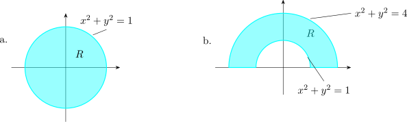
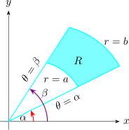
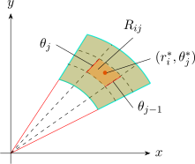
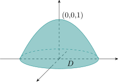

3.5 Double Integrals In Polar Coordinates
Suppose that we want to evaluate \(\iint _R f(x,y)\,dA\), where \(R\) is one of the regions shown below.

- (a)
- The disc \(x^2 + y^2\leq 1\) is \(\{ (r,\theta ) \mid 0 \leq r\leq 1,\ 0 \leq \theta \leq 2\pi \}\).
- (b)
- The half-annulus between \(x^2 + y^2 = 1\) and \(x^2 + y^2 = 4\) in the upper half-plane is \(\{ (r,\theta ) \mid 1 \leq r\leq 2,\ 0 \leq \theta \leq \pi \}\).
In either case the description of \(R\) in rectangular coordinates is awkward, but in polar coordinates \(R\) is a rectangle in the \(r\theta \)-plane, a polar rectangle \[R = \{ (r,\theta ) \mid a\leq r\leq b,\ \alpha \leq \theta \leq \beta \},\] with \(a\geq 0\) and \(0<\beta - \alpha \leq 2\pi \).

Divide \([a,b]\) into \(m\) subintervals of width \(\Delta r\) and \([\alpha , \beta ]\) into \(n\) of width \(\Delta \theta \). The circles \(r = r_i\) and the rays \(\theta = \theta _j\) divide \(R\) into small polar rectangles \[R_{ij} = \{(r,\theta ) \mid r_{i-1} \leq r \leq r_i,\ \theta _{j-1}\leq \theta \leq \theta _j\},\] and in each we take the centre \((r^*_i, \theta ^*_j)\), with \(r_i^* = \frac 12(r_{i-1} + r_i)\).

The area of \(R_{ij}\) is the difference of two circular sectors of angle \(\Delta \theta \): \[\Delta A_i = \frac {1}{2}r^2_i\,\Delta \theta - \frac {1}{2}r^2_{i-1}\,\Delta \theta = \frac {1}{2}(r_i + r_{i-1}) (r_i - r_{i-1})\,\Delta \theta = r^*_{i}\, \Delta r\, \Delta \theta .\] So a Riemann sum for \(\iint _R f\,dA\) is \[\sum ^m_{i=1}\sum ^n_{j=1} f(r^*_i\cos \theta ^*_j, r^*_i\sin \theta ^*_j)\, r^*_i\, \Delta r\, \Delta \theta ,\] which, with \(g(r,\theta ) = r\, f(r\cos \theta , r \sin \theta )\), is a Riemann sum for \(\int _\alpha ^\beta \int _a^b g(r,\theta )\,dr\,d\theta \). Passing to the limit gives the following.
Theorem 3.5.1 (Double integrals in polar coordinates). If \(f\) is continuous on a polar rectangle \(R = \{ (r,\theta ) \mid a\leq r\leq b,\ \alpha \leq \theta \leq \beta \}\), where \(0\leq \beta - \alpha \leq 2\pi \), then \[\iint \limits _R f(x,y)\,dA = \int ^{\beta }_{\alpha } \int ^b_a f(r\cos \theta , r\sin \theta )\, r\, dr\, d\theta .\] More generally, if \(D = \{(r,\theta )\mid \alpha \leq \theta \leq \beta ,\ h_1(\theta )\leq r\leq h_2(\theta )\}\), then \[\iint \limits _D f(x,y)\,dA = \int ^{\beta }_{\alpha } \int ^{h_2(\theta )}_{h_1(\theta )} f(r\cos \theta , r\sin \theta )\, r\, dr\, d\theta .\]
In practice: write \(x = r\cos \theta \), \(y = r\sin \theta \), replace \(dA\) by \(r\,dr\,d\theta \), and use the polar limits. Forgetting the factor \(r\) is the commonest error; the subsection on change of variables shows that it is a Jacobian.
Example 3.5.2. Evaluate \(\iint _R (3x + 4y^2) \,dA\), where \(R\) is the region in the upper half-plane bounded by the circles \(x^2 + y^2 = 1\) and \(x^2 + y^2 = 4\).
Solution. Here \(R = \{ (r,\theta ) \mid 1 \leq r \leq 2,\ 0\leq \theta \leq \pi \}\), so \begin {align*} \iint \limits _R (3x + 4y^2) \,dA & = \int ^{\pi }_0\int ^2_1(3r\cos \theta + 4r^2\sin ^2 \theta )\, r\,dr\,d\theta = \int ^{\pi }_0\Big [r^3\cos \theta + r^4\sin ^2\theta \Big ]_{r=1}^{r=2}d\theta \\ & = \int ^{\pi }_0\left (7\cos \theta + \frac {15}{2}( 1 - \cos 2\theta )\right ) d\theta = \frac {15\pi }{2} . \end {align*}
Example 3.5.3. Find the volume of the solid bounded by the plane \(z = 0\) and the paraboloid \(z = 1-x^2 -y^2\).

Solution. The paraboloid meets the plane \(z = 0\) in the circle \(x^2 + y^2 = 1\), so the solid lies above the unit disc \(D\), and \[V = \iint \limits _D (1-x^2-y^2)\,dA = \int ^{2\pi }_0\int ^1_0 ( 1 - r^2)\, r\,dr\, d\theta = 2\pi \left [\frac {r^2}{2} - \frac {r^4}{4}\right ]_0^1 = \frac {\pi }{2} .\] In rectangular coordinates the same integral would need the limits \(\pm \sqrt {1 - x^2}\) and a much harder calculation.
Example 3.5.4. Evaluate \(\iint _D e^{-(x^2 + y^2)}\,dA\) over the disc of radius \(a\), and deduce that \(\int _{-\infty }^\infty e^{-x^2}\,dx = \sqrt \pi \).
Solution. In polar coordinates, \[\iint \limits _{D_a} e^{-(x^2+y^2)}\,dA = \int _0^{2\pi }\int _0^a e^{-r^2}r\,dr\, d\theta = 2\pi \left [-\frac {e^{-r^2}}{2}\right ]_0^a = \pi \left (1 - e^{-a^2}\right ),\] which tends to \(\pi \) as \(a\to \infty \). Over the whole plane the integral is therefore \(\pi \). But computed over the square \([-a,a]^2\) and then letting \(a\to \infty \), which gives the same limit since the squares and discs are nested between each other, it factors as \(\left (\int _{-a}^a e^{-x^2}dx\right )\left (\int _{-a}^a e^{-y^2}dy\right )\). So \(\left (\int _{-\infty }^\infty e^{-x^2}dx\right )^2 = \pi \), and the integral is \(\sqrt \pi \). This integral, central to probability, cannot be found by any single-variable method.
Solution. One loop is traced as \(\theta \) runs from \(-\frac {\pi }{4}\) to \(\frac {\pi }{4}\), so \[A = \int _{-\pi /4}^{\pi /4}\int _0^{\cos 2\theta }r\,dr\,d\theta = \int _{-\pi /4}^{\pi /4}\frac {\cos ^2 2\theta }{2}\,d\theta = \frac 14\int _{-\pi /4}^{\pi /4}(1 + \cos 4\theta )\,d\theta = \frac {\pi }{8} .\]
Example 3.5.6. Find the volume of the solid that lies inside the sphere \(x^2 + y^2 + z^2 = 4\) and outside the cylinder \(x^2 + y^2 = 1\).
Solution. Above each point of the annulus \(1\leq r\leq 2\) the solid extends from \(z = -\sqrt {4 - r^2}\) to \(z = \sqrt {4 - r^2}\), so \[V = \int _0^{2\pi }\int _1^2 2\sqrt {4 - r^2}\,r\,dr\,d\theta = 2\pi \left [-\frac 23(4 - r^2)^{3/2}\right ]_1^2 = 2\pi \cdot \frac 23\cdot 3^{3/2} = 4\sqrt 3\,\pi \approx 21.8 .\]
Questions on this section
Stuck on something here? Ask below and it stays attached to this topic.